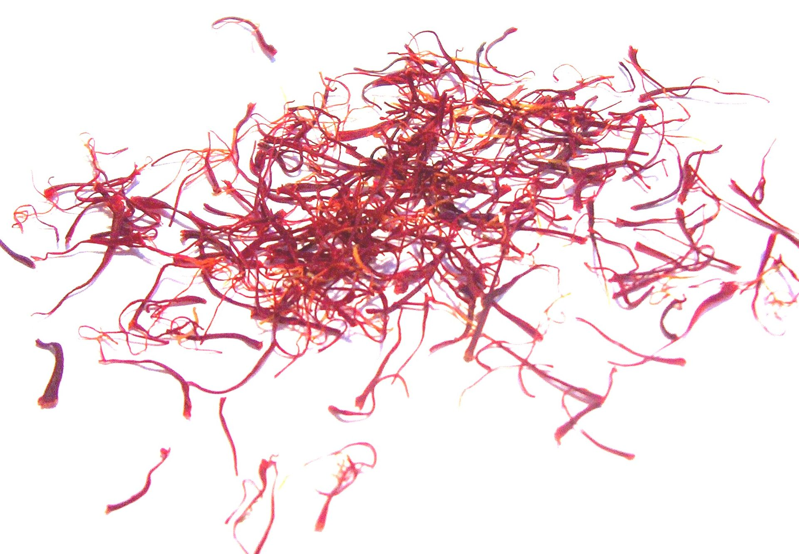

Saffron

Common Name: Saffron
Genus Species: Crocus sativus
Family: Iridaceae
Origin: Near East, possibly Asian Minor
Cultivation: Spain, Austria, Italy, Greece, France, Iran, Kashmir
Description: The purple crocus, Crocus sativus, has long been cultivated in Asia Minor
and in Spain so that its hand-picked stigmas can be used both as a spice and as a
brilliant red-yellow dye. The plant is now cultivated in India, Iran and several
Mediterranean countries; it used to be grown in the southern England town, Saffron
Walden. The yellow color of paella, bouillabaise, saffron cakes, challah bread, and some
curry sauces is characteristically obtained from saffron. Unlike the cheaper turmeric,
it can penetrate into rice grains, and a small amount can impart its flavor and smell to
the food. Currently, saffron is one of the most expensive spices because it requires
labor-intensive harvesting. The medicinal uses of saffron in the past included its
general employment as an antidote against poisoning, a digestant, an aphrodisiac, a
tonic, and as a specific for dysentery and measles. In accordance with the Doctrine of
Signatures, its yellow color signified its natural ability to treat jaundice.
Recipes that Use Saffron: